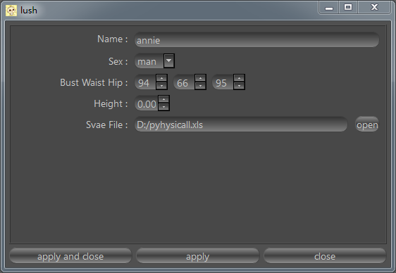
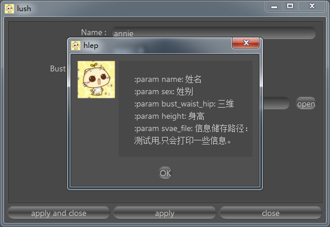

window
QFn.window
说明
函数会根据参数名与参数类型自动生成与maya的options界面类似的界面。
界面会将参数名称的_转化成空格，并首字母大写。
点击界面apply按钮会用界面上的参数执行函数。
右键提供了查看函数帮助和重置参数两个功能菜单。
 
案例
import QFn
def woman(name="annie", sex=enum("man", "woman"), bust_waist_hip=(94,66,95), height=175.0, svae_file="D:/pyhysicall.xls"):
u"""
:param name: 姓名
:param sex: 姓别
:param bust_waist_hip: 三维
:param height: 身高
:param svae_file: 信息储存路径：
测试用什么也不会做
"""
print "姓名:", name
print "性别", enum("man", "woman")[sex]
print "三维:", bust_waist_hip
print "身高", height
print "信息储存路径：", svae_file
window = QFn.Window(woman)
window.show()